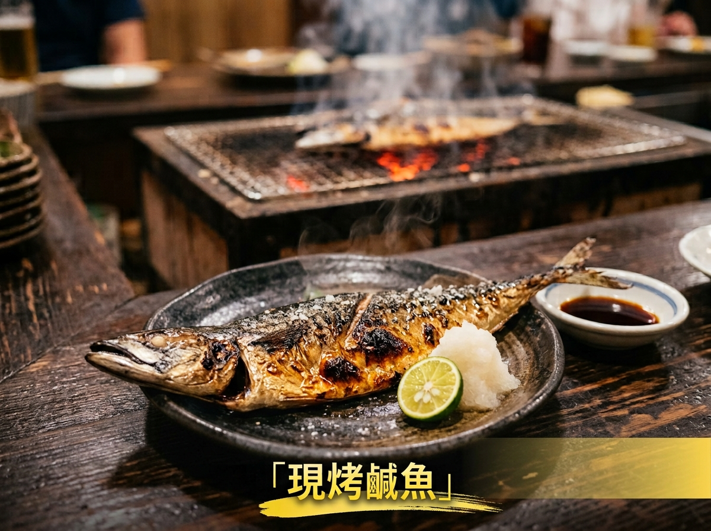

01
人氣 No.1
極上鹽烤挪威鯖魚
嚴選寒帶 28% 以上魚脂鯖魚，純手工薄漬海鹽，經備長炭高溫直火逼出豐厚油脂，外皮金黃焦香，附現磨山葵胡椒鹽與檸檬角。
NT$ 220
炭火現點現烤・鯖魚專門店
嚴選挪威寒帶頂級鯖魚，天然海鹽薄漬熟成，備長炭千度炙烤，外酥內嫩爆汁！
專為追求油脂香氣與酥脆魚皮的老饕打造。堅持下單後現點現烤，剛離火立刻熱騰騰上桌，讓每一口都伴隨炭火煙燻與金黃魚油的立體美味。

PURE CRAFTSMANSHIP
我們堅信，最純粹的美味來自食材本身的油脂與職人的耐心照料。從純手工薄漬冷風一夜干，到千度備長炭高溫鎖住鮮甜肉汁，我們將烤鹹魚做到極致，只為讓每位饕客嚐到剛離火時的感動。
探索四大職人純粹工法SIGNATURE DISHES
千度高溫逼出深層魚油，
外皮薄脆如洋芋片、魚肉細嫩多汁。
嚴選寒帶 28% 以上魚脂鯖魚，純手工薄漬海鹽，經備長炭高溫直火逼出豐厚油脂，外皮金黃焦香，附現磨山葵胡椒鹽與檸檬角。
整尾自製薄鹽熟成一夜干，炭烤後香氣濃烈。定食隨附新潟越光米飯、日式赤味噌湯、手作茶碗蒸與三品旬味小菜，飽足感十足。
以柴魚高湯、三溫糖與本釀造醬油熬煮 3 小時之秘製醬汁，炭火慢烤中反覆刷塗三層，甘鹹濃郁與炭香交融，下酒下飯兩相宜。